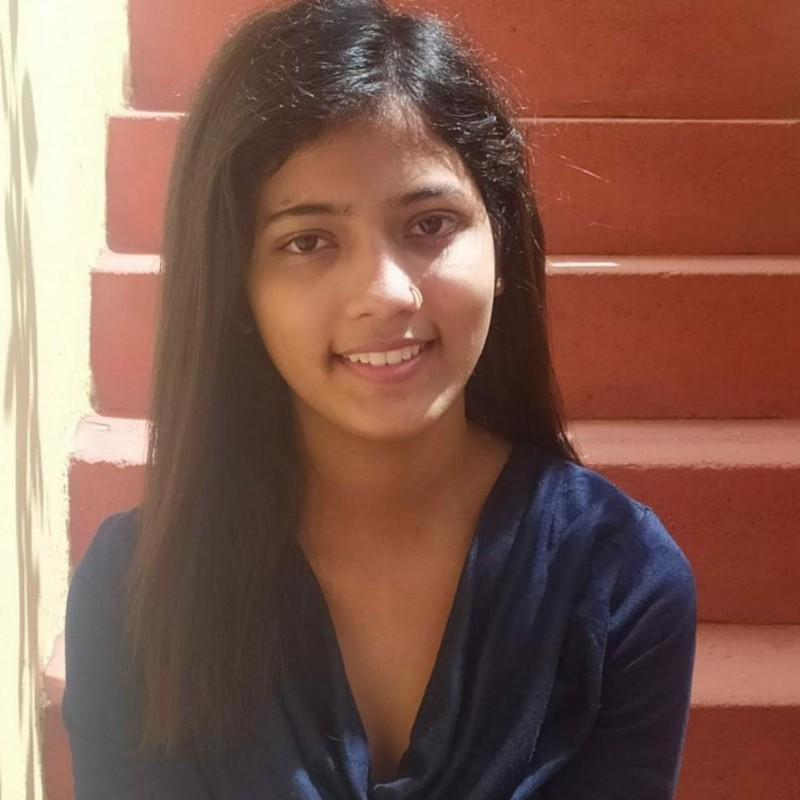
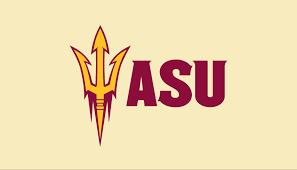
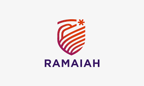

Hi There, I'm Kalyani
I am into
About Me
As a Data Analyst and aspiring Data Scientist currently pursuing a Master’s in Computer Science at Arizona State University, graduating in May 2025. I bring hands-on experience from Unilever, the Centre for Artificial Intelligence & Robotics, and the Government of India. Specializing in data analysis and machine learning, I adeptly utilize Python, SQL, Excel, and Power BI. My proficiency in statistical analysis and data mining enables me to deliver projects that significantly enhance data accuracy and model performance. Passionate about transforming complex data sets into actionable insights, I am actively seeking internship and full-time opportunities to apply my skills in strategic decision-making and innovative problem-solving.

Arizona State University | May 2025

Ramaiah Institute of Technology | May 2023
January 2023 – August 2023
January 2022 - December 2022
June 2021 – December 2021